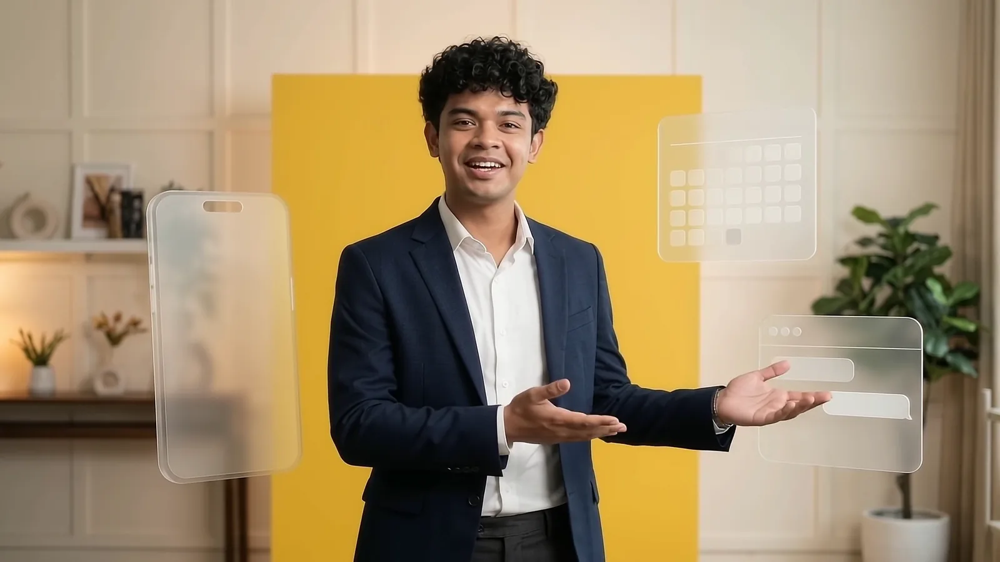

Graphic design
200+ post designs for one fry brand.
A library of more than 200 feed, Story and banner designs I made for Friesta with AI-assisted design tools, planned around four content pillars. These are 40 of my picks.
40 picks from a library of 200+ designs.